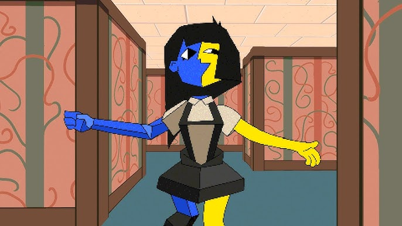
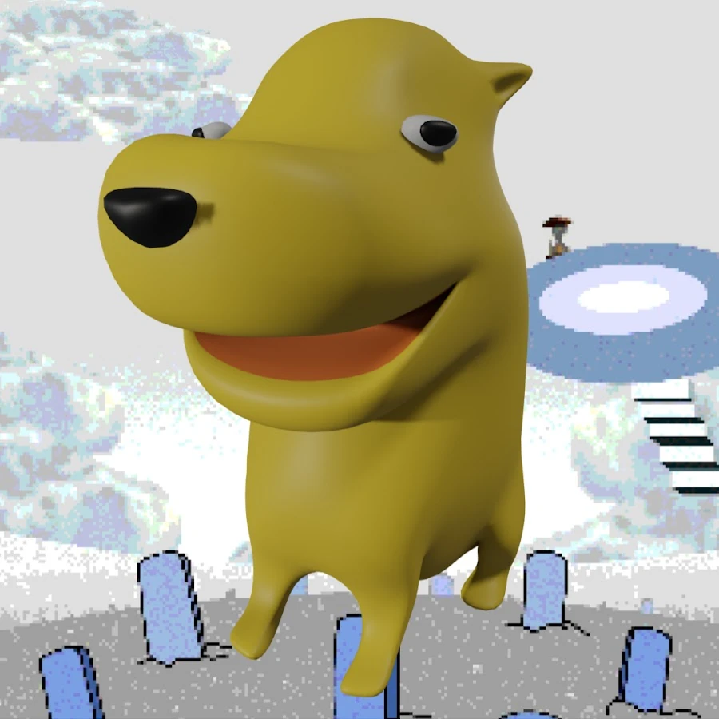

Sobre a Ena
Ena é uma personagem humanoide feminina com um corpo de duas cores, seu lado direito sendo azul e geométrico e seu lado esquerdo sendo amarelo e liso (embora seu tronco seja completamente azul e geométrico).
A série em si leva o mesmo nome da personagem é uma série de comédia animada vanguardista peruana, criada por Joel Guerra e publicada no YouTube e no Newgrounds. A série combina animação 2D e 3D, e se inspira em diversas obras de mídia surrealista e culturas ao redor do mundo, especialmente do Peru e do Japão. Ela se passa em um mundo estranho, quase pós-apocalíptico, habitado por personagens e criaturas bizarras, com um tom surreal e cômico.

ENA é uma série animada criada por Joel Guerra . Eles giram em torno da vida de ENA, uma garota com um corpo assimétrico e duas personalidades diferentes . O único outro personagem recorrente além da própria ENA é Moony; o amigo de ENA que por acaso tem um corpo que lembra uma lua crescente.
Criadores
Joel Guerra
Episódios no Youtube
Clique aqui para acessar uma playlist exclusiva com todos os episódios e vídeos relacionados à ENA.